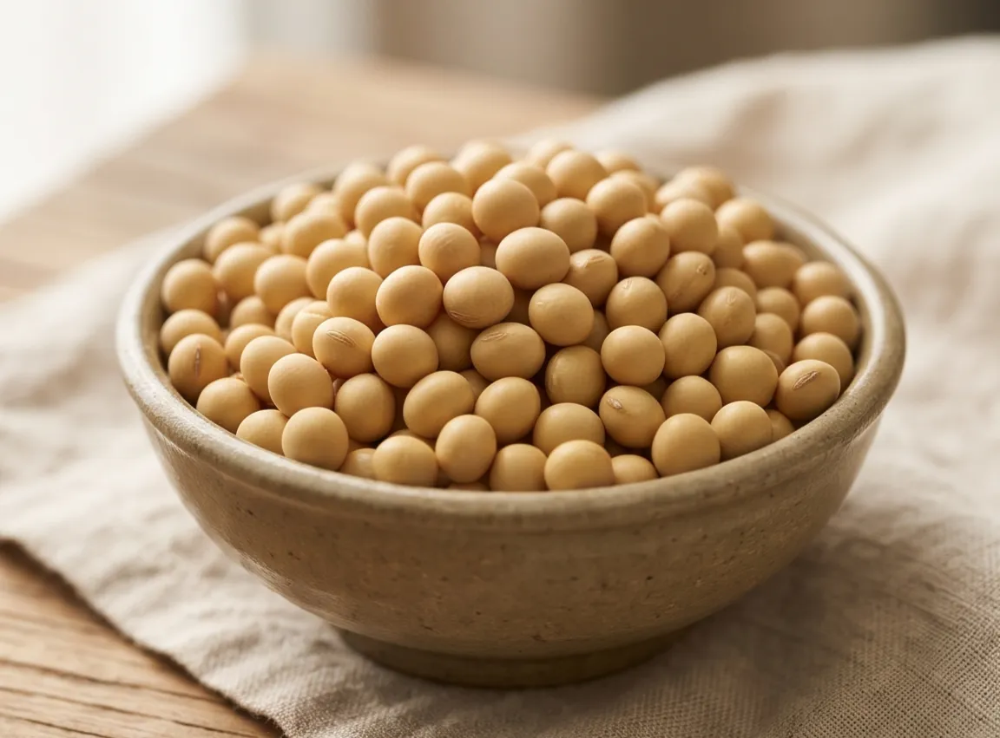
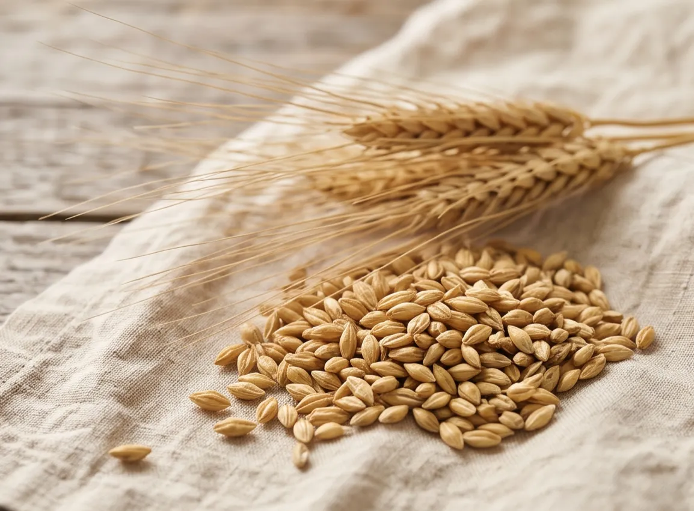
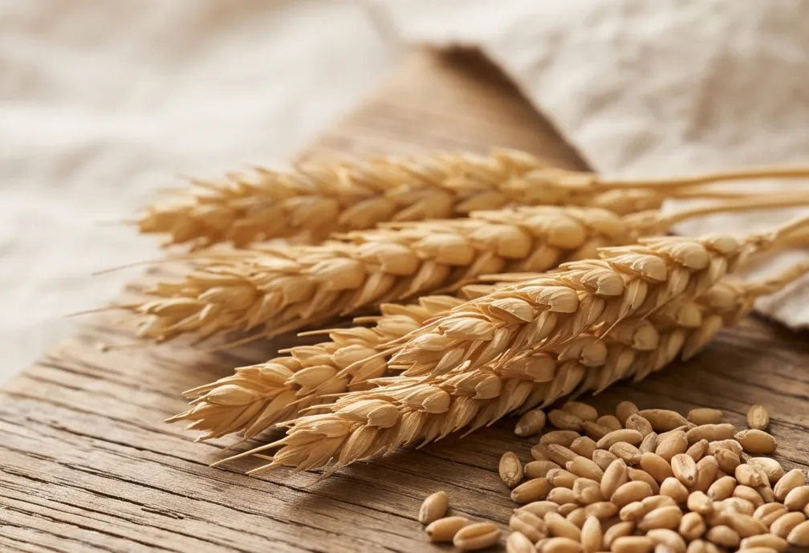

모아온이 직접 기른 곡식, 두두.
두두는 모아온이 정읍의 땅에서 직접 기른 곡식에 붙이는 농산물 브랜드입니다.
쌀과 콩, 보리처럼 우리 땅에서 자라는 곡식의 모습을 담아가고자 합니다.
— 준비 중입니다 —
우리가 기른 곡식
-
 곧 예약두두쌀신동진 + 동진찰
곧 예약두두쌀신동진 + 동진찰
주문받고 찧는 쌀. 찹쌀 비율을 고르세요.
자세히 → -

곧 예약선풍 콩된장·두부 담그는 노란 메주콩
자세히 → 
준비 중큰알보리겉보리볶아서 차로 끓이는 보리

준비 중밀우리 논에서 기르는 밀
준비되면 카카오톡 채널 소식으로 알려 드립니다.

식당·가게·단체, 대량·정기 주문은 조건을 맞춰 드립니다.
대량·정기 주문 상담 →세 이름
- 모아온
- 농사짓는 회사
- 두두농장
- 농사를 짓는 농장
- 두두
- 그 농장에서 기른 곡식
두두는 모아온이 운영하는 농산물 브랜드입니다.